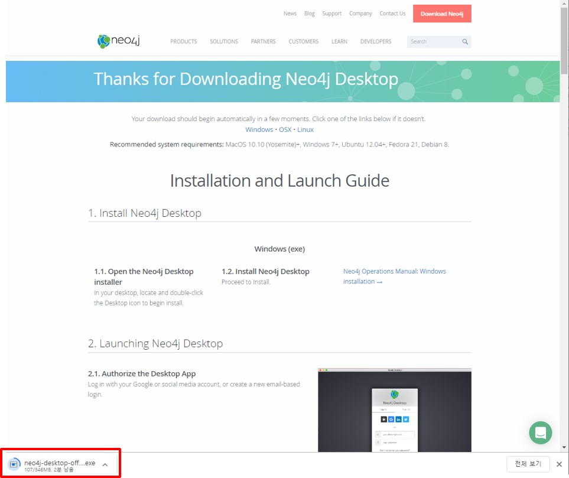

Install Neo4j
There are a lot of different options to run your own Neo4j instance just in several minutes. I recommend to use Neo4j Desktop. It is free and easy way to run an database to play with. Register your account and then launch the program:
- Download Destkop version
- Give in your information
- Download

Once the file has downloaded, you can install Neo4j. The download screen includes step by step instructions on installing Neo4j on to your operating system.
- Install Program
Run the downloaded file and follow the instructions given below: